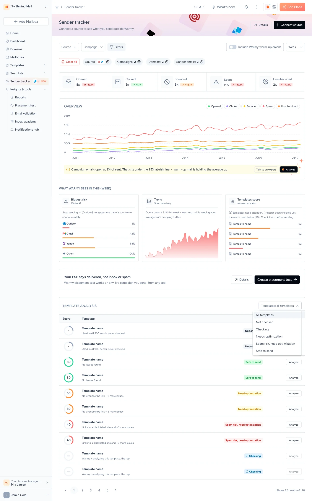
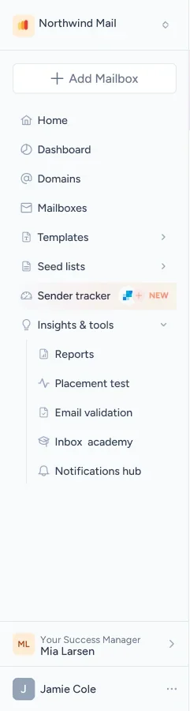
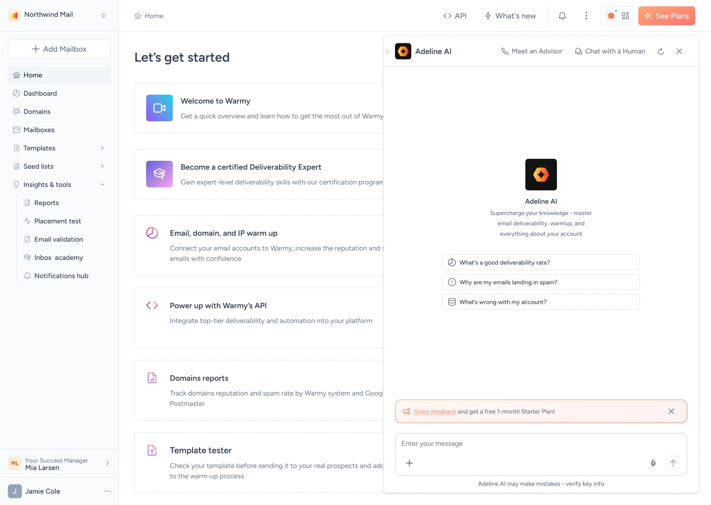
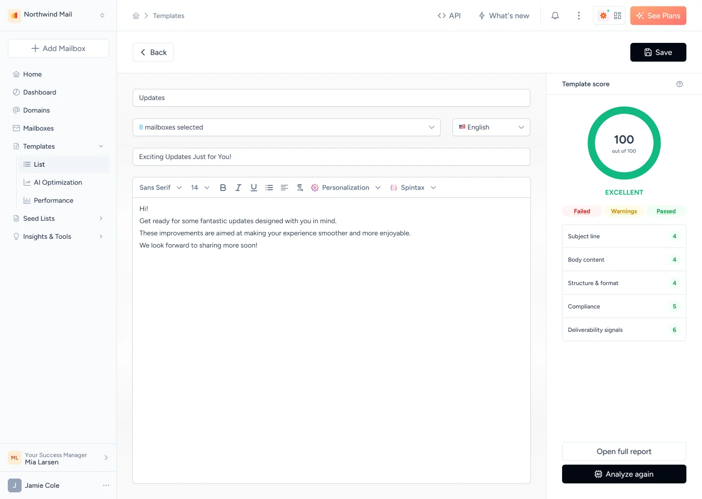
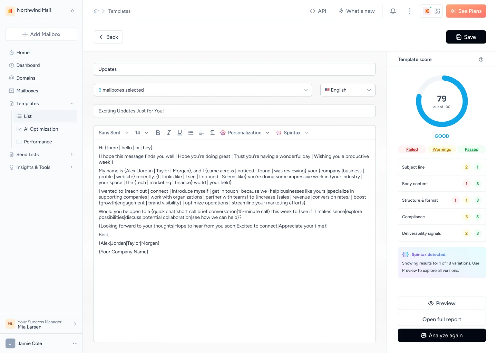
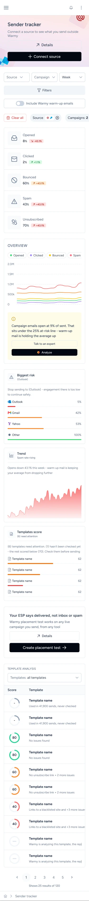
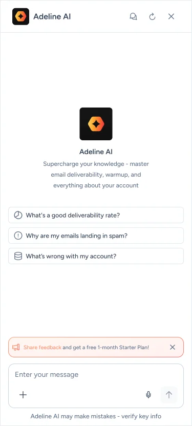
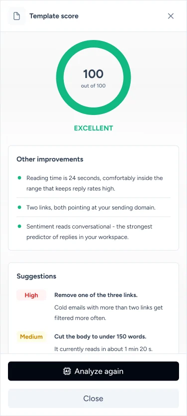

Warmy magic is on the way
The screen types and moves. Press Enter, or click it, to stop or start it.
About
Warmy keeps email out of spam. It warms up new mailboxes and domains by sending and answering real-looking mail, tests where campaigns land at Gmail, Outlook and Yahoo, checks DNS records and templates, and explains what it finds through Adeline, its AI agent.
Problem
Deliverability fails quietly. An email service provider reports "delivered" even when the email went to spam, and the cause can be a DNS record, a blacklisted link, a sudden jump in volume or a template that reads like a sales blast. Senders see the drop in replies weeks later, with no idea which of these broke.
Solution
One product that turns every signal into a next step: warm-up that runs by itself, placement tests on live campaigns, a sender tracker that shows what happens outside Warmy, a template score with fixes ranked by impact, and an AI agent that answers in plain words. Each screen ends with an action, not a chart.
Complexity
What sits behind one inboxOne email passes a dozen checks before it reaches the inbox
and marketers
deliverability
providers connected
on G2
Authentication
Reputation
Sending
Content
Mailbox providers
People and plans
Product
Powered by AITurning signals into next steps
What you send outside Warmy, from any tool: opens, clicks, bounces, spam and unsubscribes in one chart, a warning when campaign mail falls under the at-risk line, and the biggest risk named by provider.
The first AI agent in email deliverability: it helps improve domain reputation and get emails into the inbox. It answers in plain words, with three starting questions, and a call with an advisor or a human chat is one tap away.
AI reads the email before a real inbox does: a score out of 100, failed, warning and passed checks by section, and fixes it writes itself, ranked High and Medium.
Write one template, and every email goes out as a different message. Varied wording keeps a campaign out of spam filters.








Placement you can prove
The seed list behaves like real people: it opens, reads and replies, so your emails land in the inbox. The mobile seed list opens them on real phones and raises your domain reputation many times faster.
Warm-up that knows when it is done
Warm-up ramps volume step by step and shows a finish line, so senders know when the domain is ready and what keeps it safe after.
The figures in the two cards are made up for the mockup.
My part
What I brought to WarmyI designed the features, tested the ideas and asked the people who use them
- 01
Features
From the problem to the shipped screen: Sender tracker, the AI tools Adeline and Template checker with spintax, and the custom plan checkout, on desktop and mobile.
- 02
User flows
Every path mapped before a screen is drawn, with the empty, loading, error and limit states, so developers build the edges too.
- 03
Dynamic prototypes
Clickable prototypes with real states, typing, thinking, voice and scores filling in, to test with users and to show developers how a screen moves.
- 04
A/B test hypotheses
Written before anything ships, with one change, one metric and a decision rule.
- 05
User interviews
Planned and run to find the key moments that improve the experience, and to catch problems before a feature is built.
A prototype, not a picture
Prototypes in Warmy carry the real states: the typing, the wait, the answer, the next step. Users react to how it behaves, and developers see the timing they need to build.
The figures in the answer are made up.
A/B hypotheses
How I write oneA test is only as good as the sentence written before it
I run A/B tests to learn which design really helps senders and the business, not which one the team likes more. Each test starts from a written hypothesis, and these are the rules it has to pass.
- Evidence: the data behind the idea, such as a funnel drop, an interview quote or a support ticket. Never taste alone.
- Hypothesis: what we change, for whom, and what we expect to happen.
- One change: the variant differs from control in one thing, so the result points to a cause.
- Audience / segment: who sees the test, how many people, and for how long.
- Metrics: one primary metric that decides the result, and the guardrails that must not get worse.
- Tracking plan: the list of events to log on the flow (each screen view, click and step), with their properties and the metric each one feeds. Handed over with the design, so both variants are tracked the same way.
- Sample size and run time: worked out before launch from the smallest effect worth detecting, in full weeks. We do not stop early when the numbers look good.
- Success criteria: the result that counts as a win, agreed before launch.
- Decision rule: what we ship, what we drop and what we test next, for a win, a loss and a flat result.
- Trust checks: we start on a small share of traffic, check that users split evenly between groups, and confirm both variants log the same events.
- Business impact: what a win is worth to the product: revenue kept, more upgrades, less support load.
- Learnings log: every result is recorded, the losing ones too. A failed test still answers a question.
The templateBecause we saw evidence, we believe that one change for segment will move one metric by expected size. We will know after sample or time. We ship it if decision rule, unless guardrail gets worse.
Method sources: Ron Kohavi, Diane Tang and Ya Xu, Trustworthy Online Controlled Experiments (2020); Nielsen Norman Group on A/B testing.
User interviews
How I prepare and run oneAsk about the last time, not about next time
Before Plan
- Write the goal and three to five research questions: what we need to learn, not what we want to hear.
- Recruit five to eight people per segment. They test a dynamic prototype with real states, not a deck of static screens.
- Build the discussion guide on user stories for the flow under test, and turn each story into a task the respondent completes on the prototype, thinking aloud, with a clear success criterion.
- Pilot the guide once, ask for consent to record, and bring a second person to take notes.
During Listen
- Ask about the past, not the future: "Tell me about the last time a campaign went to spam."
- Keep questions open and neutral, never leading. "Would you use…" teaches nothing.
- Listen more than you talk, and let silences run. Dig with "why" and "what happened next" until you reach the real reason.
- Do not pitch, demo or defend the product. Write down exact quotes and what people do, not only what they say.
After Make sense
- Write a summary the same day, while it is fresh.
- Tag the notes and group them on an affinity map across interviews.
- Count how many people said a thing before calling it a pattern.
- Turn patterns into journey map changes, A/B hypotheses and backlog items, and share them with the quotes attached.
Campaign visuals
The mosaic moves. Press Enter, or click it, to stop or start it.
Marketing design around the product: creatives for PPC campaigns and social media, banners and booths for conferences and expos.